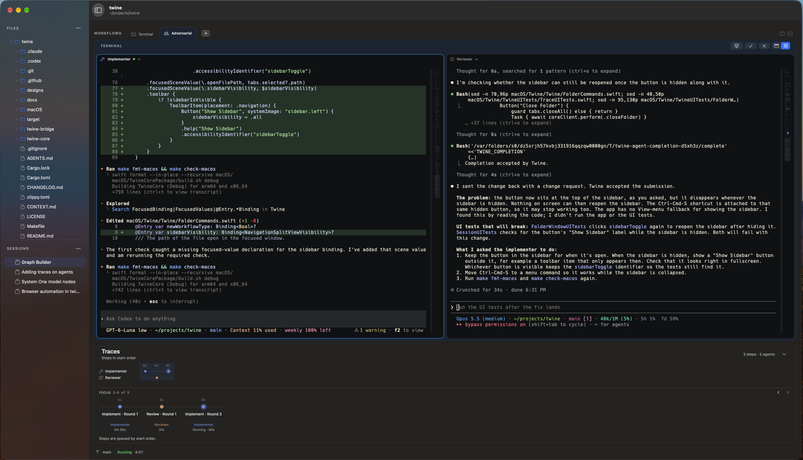

01 / START SIMPLE
YouAgent
A terminal. An agent. A task.
Use a plain shell or one interactive coding agent. Split panes, keep files nearby, and work directly in the terminal.
Terminal & Single agent
Native macOS. Open source. Early days.
Your terminals, coding agents, files, and workflow history.
One Mac app. Room for the way you work.
macOS 26+ Apple Silicon & Intel DMG installer

Install and authenticate your agent tools separately. Mix harnesses across roles, or start with a plain shell.
A little structure goes a long way
Work solo, add a second pair of eyes, or share a task across agents.
You choose how the work moves forward.
01 / START SIMPLE
Use a plain shell or one interactive coding agent. Split panes, keep files nearby, and work directly in the terminal.
Terminal & Single agent
02 / BUILD & REVIEW
One agent implements. Another reviews, approves, or requests changes. Explicit handoffs and bounded loops keep the work moving.
Adversarial
03 / DIVIDE THE WORK
A coordinator assigns sub-tasks to parallel workers, then gathers and checks their results. Each role has its own terminal.
Coordinator
Have your own way of working? Design a reusable workflow type with your own roles, stages, handoffs, and review loops.
See howKeep the thread
Organize work into sessions and workflows. Each folder keeps its own terminals, files, and tabs.
See workflow activity in Traces, inspect what happened, and jump to recorded terminal output where available.
Restore sessions, pane layouts, and retained output. Resume agent conversations when the harness provides a session handle.
Browse your folder and make small text edits, with undo and checks for changes made on disk before saving.
Ready when you are
Twine is in early development.
Try it on a real task and tell us what you think.
Open the downloaded DMG and drag Twine to the Applications folder. Eject the disk image, then open Twine from Applications.
Create a session, choose a workflow, and select the agent tools you’ve installed.
Enter your task in the first agent’s terminal. Follow the work as the agents hand it off.
The current release is ad hoc signed and not notarized. Read the install notes for first-launch approval.
Prefer to build it yourself? Build from source